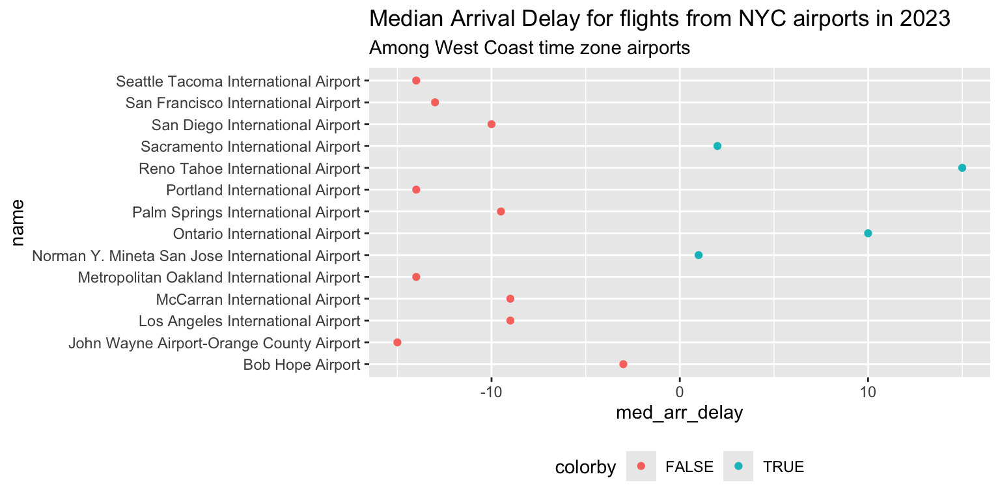

library(tidyverse)
library(nycflights23)
q <- 0Lab Quiz 02 Info
Our second lab quiz is scheduled for Friday of Week 5. The first half of class will cover new content, and the second half of class you will complete the in-person portion of the lab quiz.
Changes from last time
- In addition to the built-in R help pages, you may also use the
tidyversecheat sheets provided by me and bring one side of one notecard of handwritten notes. - You do not need to submit to gradescope for the in-class portion. I will pull whatever is in your GitHub repo at the end of the quiz time and that is your submission.
- To resubmit, you will submit to gradescope. This way I know who wants to resubmit and who wants to keep the in-class as-is.
- I will open your .rmd on my computer and knit your file.
Guidelines
This is a limited note, closed internet resources, closed other people lab quiz. I want to see what’s in your brain! You may use the help pages built-in to R (accessed by ?ggplot), the Posit cheatsheets provided by me, and one side of one notecard of your own handwritten notes.
On the resubmission, you may use my slides and your own notes from class, but you shouldn’t use other internet resources or get help from anybody but me.
The lab quizzes are not written to be tricky or hard. If you’ve been completing the in-class activities and the homework, and putting the time and effort in to understand them, you should do well on the lab quizzes.
Skills
Data Wrangling
- Know how the following verbs act on a data set:
filter,distinct,slice,slice_min,slice_max,mutate,select,arrange,relocate,*_join(all flavors discussed in class),bind_rows,bind_cols,pivot_wider, andpivot_longer,separate,unite,group_by,ungroup,summarize,count,rowwise- Syntax for using
- Describe what the output would look like
- Given a data set and goal, identify and utilize the appropriate verb to create the data set of interest
- Given a dataset, describe if it is tidy. If it is not, describe what a tidy format would look like
Dates/Times
- Use {lubridate} functions to parse dates into ISO8601 format
-
mdyymddmyetc.
-
- Use {lubridate} functions to to extract elements of a date/time
-
yearmonthdayweekwdayetc.
-
Factors
- Create a factor to represent a categorical variable
- Given a factor, modify the levels as needed for the analysis by recoding, reordering, or combining levels.
-
fct_reorder,fct_reorder2,fct_infreq,fct_rev,fct_recode
-
Grading
For the in-class portion, I will grade your .rmd’s and be looking directly at your code. You’ll earn points through the following:
- 1 point per question (successful or not successful)
- 1 point if I can successfully knit your file
- 1 point for submitting via GitHub
If you have trouble knitting or submitting via GitHub, submit your .rmd via email. There will be a 5 minute grace period past the end of class to submit, but I will not accept submissions beyond that point.
Resubmission
You may resubmit the lab quiz by 11am on Sunday (48 hours). Resubmissions will be submitted through Gradescope.
Practice Quiz
Rules
Your solutions must be written up in the R Markdown (Rmd) file called lab-quiz-02.Rmd. This file must include your code and write up for each task. Your “submission” will be whatever is in your exam repository at the deadline. Commit and push the Rmd and outputs of that file.
This exam is limited notes, closed internet, closed other people.
-
You have until 10:45am to complete this exam and turn it in via your personal Github repo - late work will not be accepted. Technical difficulties are not an excuse for late work - do not wait until the last minute to knit / commit / push.
- If you do have technical issues, you will be able to solve them for the resubmission, but if you do not turn in the in-class portion you will not receive any points
- Example: I run into a knitting issue and don’t leave myself time to commit to github, so I’m not able to turn anything in for the in-class portion. I work hard over the weekend to make sure everything is correct for the resubmission. I earn 0/10 on the in-class and 10/10 on the resubmission, so my score for the lab quiz is 10/20.
- Example: I run into a knitting issue 2 minutes before the deadline, but make sure to commit my .rmd and submit to gradescope before trying to solve the issue. I fix the knitting issue over over the weekend, and also find an error in one of my problems I submitted. I earn 8/10 on the in-class (1 unsuccessful problem + no output file) and 10/10 on the resubmission, so my score for the lab quiz is 18/20.
- If you do have technical issues, you will be able to solve them for the resubmission, but if you do not turn in the in-class portion you will not receive any points
Even if the answer seems obvious from the R output, make sure to state it in your narrative as well. For example, if the question is asking what is 2 + 2, and you have the code in your document, you should additionally have a sentence that states “2 + 2 is 4.”
You may only use the packages provided in the initial .rmd file for this assignment. Your solutions may not use any other R packages.
Data
The nycflights23 package contains information about all flights that departed from NYC (e.g. EWR, JFK and LGA) in 2023. The main data is in the flights data frame, but there are additional data sets which may help understand what causes delays, specifically:
-
weather: hourly meteorological data for each airport -
planes: construction information about each plane -
airports: airport names and locations -
airlines: translation between two letter carrier codes and names
Questions
Question 1
a
Filter the flights dataset to only include flights from JFK to MSP. Call this new dataset jfk_msp_flights
# your code hereb
I’d like to create a table with the median flight delay for each month among flights from JFK to MSP. I try the following code but it’s giving me an error. Fix the code, then tell me which month has the longest and shortest median delay.
c
Explain why na.rm = TRUE is included in the code chunk from part (b) (no R code needed)
Question 2
Use mutate to create a new column in the flights dataset that contains the day of the week of the flight (“Monday”, “Tuesday”, etc.).
Question 3
For the next two questions, use the plot below to answer the questions.

a
To create this plot, I had to do a few things. First, I combined the flights dataset (which contains information about arrival delay) with the airports dataset (which contains the full name of the airports, along with their time zones). Did I use a left_join, full_join, bind_rows, or bind_cols to combine them? Explain how you can tell.
b
Next, I grouped by airport name and found the median arrival delay with summarize. I then created a new variable called colorby using mutate that I used to color the points. How do you think I computed this variable? Be as specific as possible.
Question 4
Here is the code that I used to create the ggplot. Edit this code so that the airports are listed in order of shortest arrival delay at the top to longest arrival delay at the bottom
plot_data = read_csv(here(here(), "data/lq2_plot_data.csv"))
plot_data %>%
ggplot(
aes(x = med_arr_delay, y = name, col = colorby)
) +
geom_point() +
theme(legend.position = "bottom") +
labs(
title = "Median Arrival Delay for flights from NYC airports in 2023",
subtitle = "Among West Coast time zone airports"
)